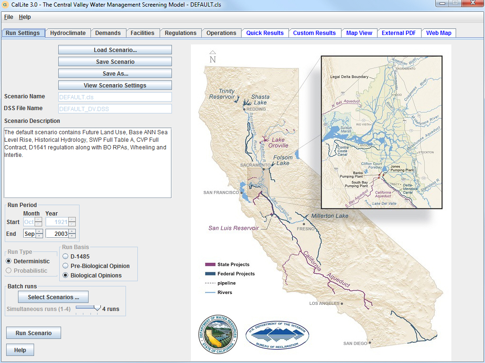

The majority of user choices in the CalLite GUI are handled on a series of dashboards accessed through tabs across the top of the interface. The six dashboards for specifying scenario settings have tab titles in black. The five dashboards for viewing results have tab titles in blue.
There are also two dropdown menus:
File: Has options to load, run, save, save as, or delete an existing scenario.
Help: Provides access to this help system and the current CalLite GUI version.
